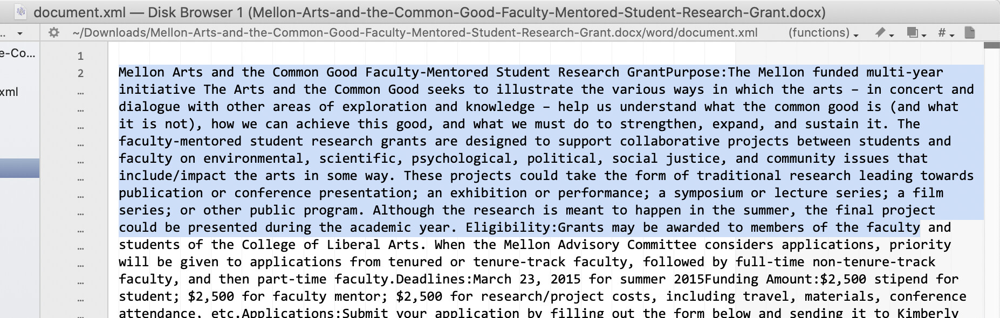

DHSI 2021 Presentation: Introduction to Github
John D. Muccigrosso
Thursday, 27 May 2021
GitHub
Say hello to Octocat
And hold on a minute
Let’s talk about text
Plaintext
You should be using plain old text more.
Plaintext
Why?
- It lasts
- Files are small
- You can read it yourself 👀
- You don’t need expensive software to work on it
- There are standard data formats for lots of uses
- There are tools
- BBEdit (for Macs)
- You won’t waste time playing with Comic Sans
Some Examples: JSON

Some Examples: MS Office
> unzip -l Mellon-Arts-and-the-Common-Good-Faculty-Mentored-Student-Research-Grant.docx
Archive: Mellon-Arts-and-the-Common-Good-Faculty-Mentored-Student-Research-Grant.docx
Length Date Time Name
--------- ---------- ----- ----
2119 01-01-1980 00:00 [Content_Types].xml
735 01-01-1980 00:00 _rels/.rels
1766 01-01-1980 00:00 word/_rels/document.xml.rels
27166 01-01-1980 00:00 word/document.xml
1384 01-01-1980 00:00 word/footer1.xml
1384 01-01-1980 00:00 word/header2.xml
1384 01-01-1980 00:00 word/header1.xml
1384 01-01-1980 00:00 word/footer2.xml
121940 01-01-1980 00:00 docProps/thumbnail.jpeg
7643 01-01-1980 00:00 word/theme/theme1.xml
2353 01-01-1980 00:00 word/settings.xml
16445 01-01-1980 00:00 word/stylesWithEffects.xml
15579 01-01-1980 00:00 word/styles.xml
737 01-01-1980 00:00 docProps/app.xml
2962 01-01-1980 00:00 word/fontTable.xml
6651 01-01-1980 00:00 word/numbering.xml
431 01-01-1980 00:00 word/webSettings.xml
745 01-01-1980 00:00 docProps/core.xml
--------- -------
212808 18 filesSome Examples: MS Office

Some Examples: MS Office

Other stuff?
Yep, speakers, visits to other institutions
Back to GitHub
Not a how-to, but a what-is
- Programmers originally
- Track changes
- So a kind of archiving
- Make public